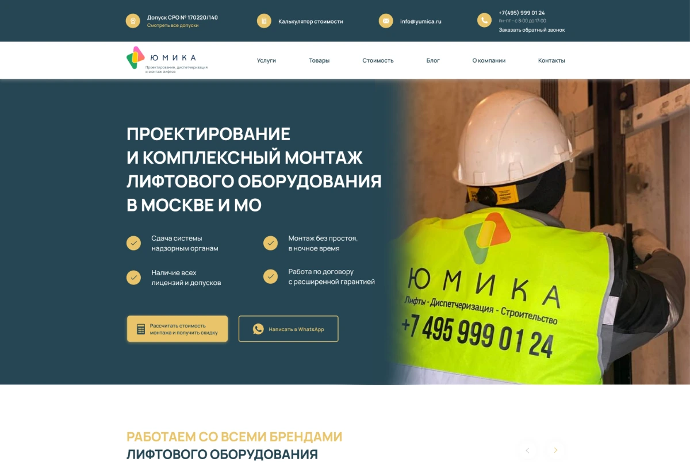
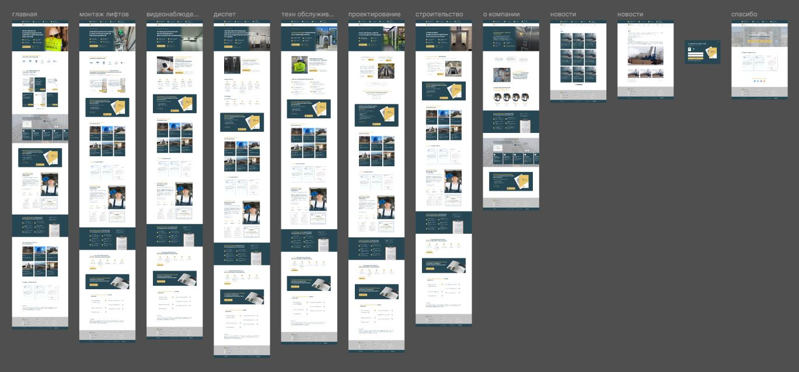
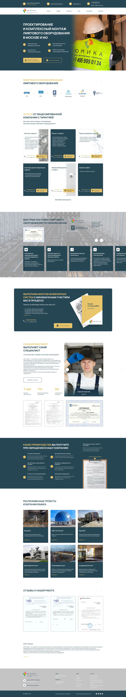

Корпоративный сайт · Технические услуги
Юмика
Сайт компании по проектированию и монтажу лифтового оборудования.
Моя работа
Разработала дизайн многостраничного сайта: страницы услуг, выполненные объекты, документы и формы обращения.

Проект в Figma
Главная, услуги, сведения о компании, новости и служебные экраны.

Макеты страниц
Длинные страницы можно раскрыть целиком. Любой макет открывается отдельно для подробного просмотра.
Главная страница
